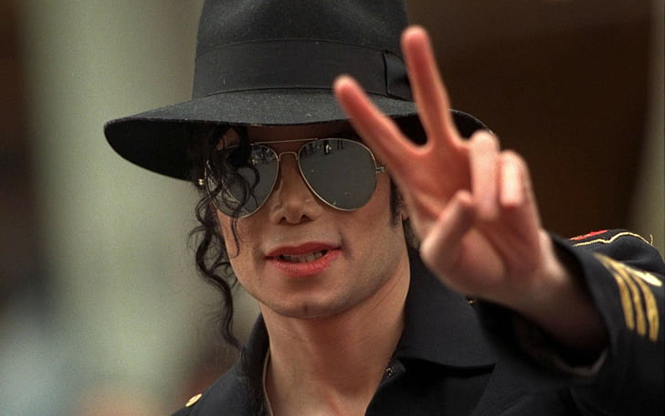

Головна

Майкл Джо́зеф Дже́ксон
Майкл Джо́зеф Дже́ксон (англ. Michael Joseph Jackson, 29 серпня 1958 —25 червня 2009) — американський співак, танцюрист, кіноактор,
автор пісень, який досяг міжнародної популярності у віці 12 років як соліст дитячого гурту «П'ятірка Джексонів», а згодом став одним
із комерційно найуспішніших сольних артистів в історії. Володар численних премій та нагород; вважається «королем поп-музики».
Найбільшим визнанням користуються три альбоми, записані під керівництвом продюсера Квінсі Джонса, — «Off the Wall» (1979),
«Thriller» (1982) і «Bad» (1987). «Thriller» був занесений у Книгу рекордів Гіннесса як диск, що був розпроданий найбільшим
накладом за всю історію музики (108 млн примірників, станом на 2010 рік).
В активі Джексона тринадцять премій «Греммі», стільки ж разів він піднімався зі своїми піснями на перший щабель американських
чартів продажів. Двічі його ім'я занесене в Зал слави рок-н-ролу — як учасника «П'ятірки Джексонів» (1997) і як сольного виконавця (2001).